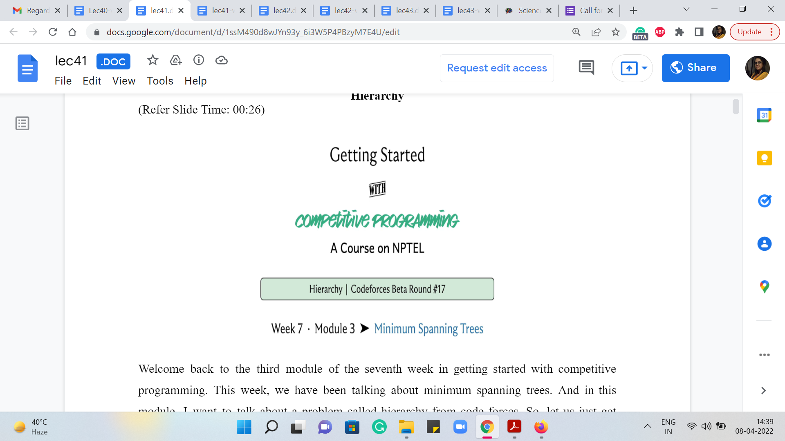
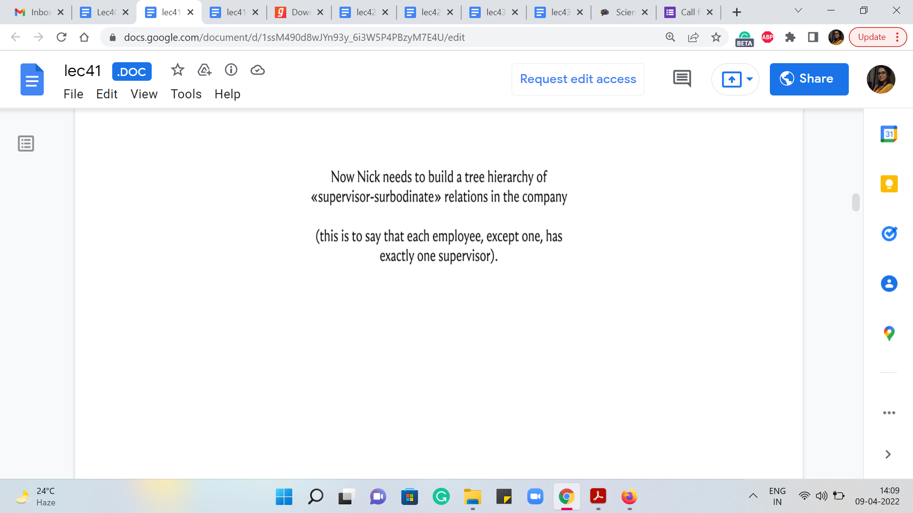
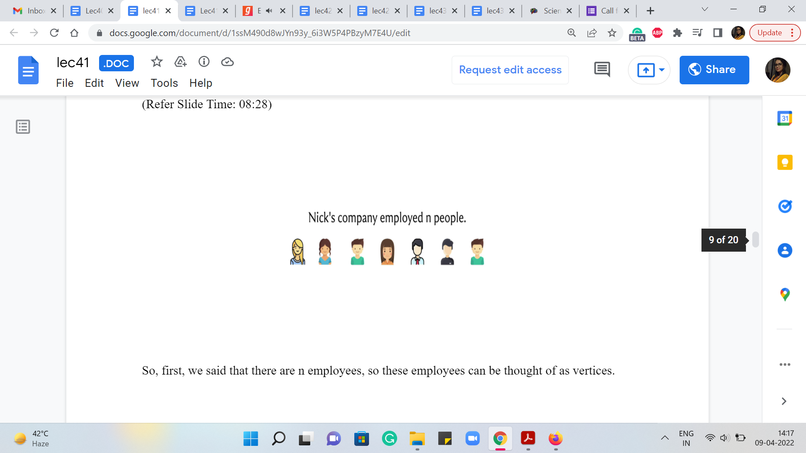
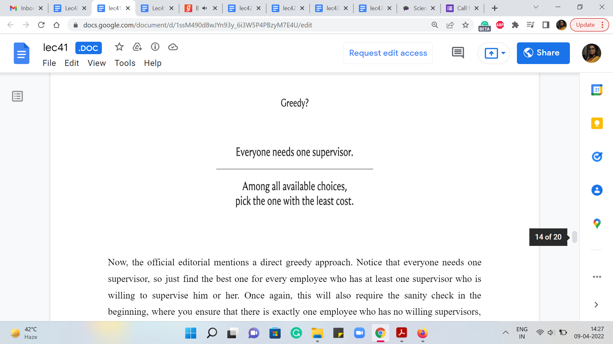
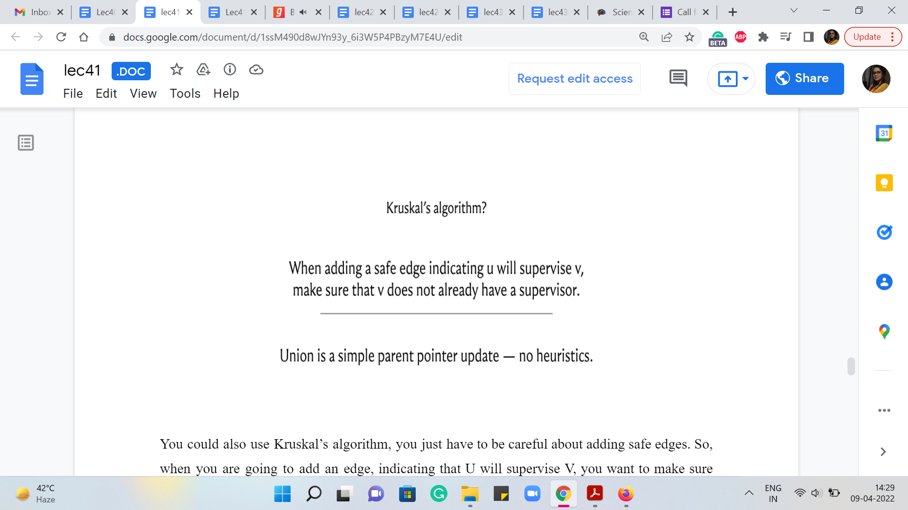

M 3 (Hierarchy)
Lecture - 41
Minimum Spanning Trees - Module 3 (Hierarchy)
(Refer Slide Time: 00:26)

Welcome back to the third module of the seventh week in Getting Started with Competitive Programming. This week, we have been talking about minimum spanning trees. And in this module, I want to talk about a problem called ‘hierarchy’ from Codeforces. So, let us just get started with the problem statement here.
So, we are told that Nick’s company employed n people. Now being primed to think about graphs, when you even read this sentence, you are probably thinking about people as vertices, which is excellent. I think that is how things are going to pan out. So, let us take a look at what happens next.
(Refer Slide Time: 00:49, 01:28 & 01:58)


Nick needs to build a tree hierarchy of supervisor-subordinate relations in the company. This is to say that each employee except one has exactly one supervisor. So, this is all from the problem statement. I have not really added any remarks here. So, we are told that every person has to find one and exactly one supervisor, except for one person whom you could think of as some kind of a root node in this tree structure. Or if you are thinking in terms of the story, this is probably the CEO of the company who does not need to report to anybody.
So, there are m applications in the following format. Employee ai is ready to be a supervisor of employee bi at an extra cost of ci. The qualification of each employee is known and for each application, it is true that ai is qualified to supervise bi. Now in this part of the problem statement you are not told anything more about what it means for ai to be qualified to supervise bi.
But if you look at the section where the input-output format is described, we are told that for each application, it is promised that qai is greater than qbi, where qx denotes the qualification of employee x. So, it is good to know that that is what it means for one employee to be qualified to supervise another, that their qualifications are strictly greater than the person that they are expressing willingness to supervise.
(Refer Slide Time: 02:28 & 03:06)



We are also told that different applications can be similar, that is, they can come from one and the same employee, who offered to become a supervisor of the same person, but at a different cost. This is perhaps to say that if you think of these willingness applications as edges between people, then this graph can have multiple edges between the same pair of different costs. So, these remarks were in the input-output format section. So, let us just go back to the problem statement to figure out what our task is, and it turns out to be a fairly predictable task.
We are to help Nick calculate the minimum cost of building such a hierarchy or find out that it is impossible to build it. Now, you might be wondering, under what circumstances would it be impossible to build the kind of hierarchy that we are looking for? Well, this can happen. For example, if you have multiple employees that nobody is willing to supervise. Recall that the definition of the hierarchy requires that there is exactly one employee who does not have a supervisor, and everybody else has exactly one supervisor.
So, imagine that in your instance, you have two or more employees, whom nobody is willing to supervise among all the applications that you have received, then no matter how hard you try, you will not be able to build up a complete hierarchy. So, these are the kinds of situations that you want to filter out and identify as being impossible. Notice also that what we just described covers all the impossible scenarios.
Because if this does not play out, then you have an instance where every employee, except for at most one has at least one person who is willing to supervise him or her. And therefore, if nothing else, you could just arbitrarily identify a supervisor for each employee and you will end up with at least some hierarchy. So, it is not going to be impossible. But our task would still be to figure out the best possible among all the hierarchies that turned out to be valid ones.
(Refer Slide Time: 04:46)


Now, as you might expect, we would want to model this as some sort of a graph. So, let me just say that if we have vertices A and B corresponding to people then we will have an edge from A to B to indicate that B is potentially going to be supervised by A. So, if you have an application for employ A who says that they are willing to supervise employee B, for some cost C, then you would add this edge from A to B and assign it a cost of C.
If there are multiple applications of this kind, you could add multiple edges with their respective costs. So, the first thing to notice is that what you are really looking for is a subgraph with the property that every vertex except for one has in-degree exactly one. Just to recall some terminology, the in-degree of any vertex V is the number of vertices U search that there is an edge from U to V or U comma V is an edge in the graph G.
So, that is why we are looking for a subgraph, where the in-degree of every vertex except for one in the subgraph is going to be exactly one. This corresponds to the constraint that every person has exactly one supervisor. Now, beyond the in-degree constraint, we are also looking for a subgraph, which does not have cycles. Because if you recall, in the problem statement, we are given that we have to find a tree hierarchy. In fact, the lack of cycles also follows from the way qualifications are described for supervisor-subordinate relationships.
(Refer Slide Time: 06:23)


For example, let us say that we start with employee A, who has a qualification of level 9, for instance, and let us say that we determine that A is going to supervise B. So, B’s qualification necessarily must be strictly less than 9 for this to be a valid supervisor-subordinate relationship. So, for example, let us say that B’s qualification is level 8. Now let us say that B is to supervise C. Let us say this is what we are determining in our solution, then once again, C’s qualification must be strictly less than B’s.
So, in particular, it must be less than 8. Let us say that it is 7. And let us say that C, in turn, is planning to supervise D. And once again, we know that for this to be valid, D must have a qualification of level 6 or less. So, let us say that it is 6. And now notice that if you do end up suggesting that D should supervise A, then this will not be a valid supervisor-subordinate relationship because D’s qualification is strictly less than A’s.
So, anytime you see a cycle in the supervisor-subordinate relationship structure that you are proposing, you know that it is not going to be a valid structure. So, the fact that what you are looking for is a tree also follows from how we are told valid supervisor-subordinate relationships are established. Notice that this argument worked out because we had this constraint for the applications.
If this was not a strict inequality, then our argument would not quite work out in the same way. Of course, we are also told in the problem statement that we are looking for a tree hierarchy. So, we know for more than one reason that the substructure that we are looking for, is in fact, acyclic. So, just to recap what we have so far, let us reframe everything that we know in terms of both ‘input’ and expected ‘output,’ in the language of graphs.
(Refer Slide Time: 08:28 & 08:35)
 
So, first, we said that there are ‘n’ employees. So these employees can be thought of as vertices. And we also know that we have these applications, indicating that employee ‘ai’ is ready to supervise employee ‘bi’ at the cost of ‘ci.’ So, we said that we will model this by an edge from ai to bi with an edge weight of ci. That is what we are going to do for each of the applications that we get. So, we have this graph. And what we are looking for as a subgraph is, well, on the one hand, we said that every vertex except for one must have indegree exactly 1.
(Refer Slide Time: 09:08, 09:23)


So, this means that there must be exactly ‘n-1’ edges in our subgraph. And also, we said that we are looking for a tree hierarchy. So, we said that there are going to be no cycles. So, notice that the solution is, in fact, a minimum cost spanning tree.
Because, well, you have ‘n-1’ edges, which do not form cycles, and the minimum cost comes from the fact that we have been tasked with finding a minimum cost hierarchy. So that is where the minimum cost comes from. So, we could potentially just run a minimum spanning tree algorithm here. We just have to be a little bit careful because the edges are directed. And we have this in-degree one constraint to be a little bit careful about as we work with these directed edges.
(Refer Slide Time: 10:01)


So, one way to try and account for this is to say that whenever you are working with your MST algorithm, if you are trying to add an edge from A to B at any stage, you want to make sure that B does not already have a supervisor. Once you pass this sanity check, then this edge is truly safe to add.
Now, it seems tempting to use something like Prim’s algorithm for this because of the way you are expanding out, if you only expand out along out-edges seems like the sanity check is built-in for you. But notice that Prim’s algorithm starts with an arbitrary choice of a source vertex. And you can imagine that the spanning tree that Prim’s algorithm will produce at the end will have the source vertex as the root or the CEO, or the person who is eventually not going to have a supervisor. So, you want to be careful about the choice of source.
So, you have to go through your applications to figure out which one is that ‘one applicant’ who does not have any willing supervisor. Notice that in any valid instance, there must be exactly one such employee. We already said that if there are two or more employees who have no willing supervisors, then this is an impossible instance, and we will return as much. So, your code should check for this situation separately.
And on the other hand, it also cannot be the case that there is no such employee. Imagine a situation where every employee had at least one willing supervisor. Then in the graph that you have built up, you could just start with any employee, and go to anyone who is willing to supervise him or her and just keep doing this. And you are never going to get stuck because every employee has at least one other employee who is willing to supervise him or her.
So, if you keep following along because your graph only has n vertices, and you will never get stuck, it must be that at some point, you repeat a vertex. That is unavoidable. And when you do repeat a vertex, you have actually discovered a cycle. But we just argued a few moments ago that you could not structurally have a cycle because we have been promised that every time any employee is willing to supervise another one, they are actually qualified to do so.
And because of the way this is defined, the qualifications are always strictly increasing or strictly decreasing, depending on which direction you are going around this sequence of employee-supervisor relationships. So, as a result, we know that it cannot be the case that every employee has a willing supervisor. There must be somebody who does not have one for things to make sense.
Therefore, in a valid instance, there is going to be exactly one employee who does not have any willing supervisor. And that would be the most appropriate choice for a source vertex for Prim’s algorithm. If you start from here, then you should be able to just run Prim’s algorithm and find your optimal answer. Now, this is an approach that I actually have not tried implementing. So, if you do this, and it works out, do let me know; I would look forward to seeing your code.
(Refer Slide Time: 13:10 & 13:41)
 
Now, the official editorial mentions a direct greedy approach. Notice that everyone needs one supervisor, so just find the best one for every employee who has at least one supervisor who is willing to supervise him or her. Once again, this will also require the sanity check at the beginning, where you ensure that there is exactly one employee who has no willing supervisors. Once that sanity check is out of the way, this greedy approach can be shown to work.
You could also use Kruskal’s algorithm, you just have to be careful about adding safe edges. So, when you are going to add an edge, indicating that U will supervise V, you want to make sure that V does not already have a supervisor. Your parent pointers will naturally keep track of the hierarchy that you are actually looking for. And since this is a fairly elegant solution in terms of the code, this is the approach that I chose to implement for this problem.
(Refer Slide Time: 14:16 & 15:04)


Let us take a quick look at the implementation. So, the first thing that I did was to modify the union operation in the UnionFind data structure a bit so that it is just directly tracking parent pointers without doing any rank or depth checks. So, when I say that I want to take the union of ‘i’ and ‘j,’ I do mean that I want the parent of j to be i. And this indicates that j is going to be supervised by i. So, that is what we want to do here. So, we are not going to set the direction of the pointer based on what is optimal in terms of the depths of the trees. We are actually going to do exactly what we are told to do. So, this is a minor modification. In fact, it simplifies the way union is performed. And that is what we need for the semantics of this problem.
Now, in terms of what we do in the main function, after reading all the edges based on the applications and making sure that, you know, we use the standard format of the edge list: the first coordinate in the tuple being the cost and then the second and the third coordinates, corresponding to the directed edge from U to V. After having done that, as usual, we will sort the edges by weights as Kruskal’s algorithm would do. And now you will see that I also have an MST variable, which is a vector that will collect all the edges that we actually add to our spanning tree.
(Refer Slide Time: 17:19 & 19:51)


Now, you do not literally need to output the tree hierarchy, you just need to output the cost. So, you do not really need this. But I keep talking about how a little bit of extra bookkeeping can actually give you the spanning tree as well. So, this is just to demonstrate that even though we will not use it for generating the final output, we will use it to check if we actually managed to generate a complete hierarchy or not. So, it is useful to know how many edges we managed to add to a spanning tree.
Notice that if there is more than one employee who has no willing supervisors, then when you run your ‘spanning tree’ algorithm at the very end, you will actually not get a spanning tree, but you will get a spanning forest—one for each employee who does not have any willing supervisor. There will be one component in this forest for every such employee. So, all we need to do is either check the number of sets that were produced at the very end and see if that is greater than one.
Or we could just tally up the number of edges that were collected in our spanning tree and check if that falls short of n - 1. In that case, a spanning tree is not really a tree but a forest. So, this is one way of figuring out if we are in an impossible situation or one where we were able to successfully build a hierarchy. So, that is another thing that this MST variable may come in handy.
So, as always, we are going to initialize the UnionFind data structure. We are going to do it with n + 1 vertices just to keep the indexing a painless experience. And we have the ‘answer’ variable, which will track the costs of the edges that we add to our spanning tree.
Now, we run Kruskal’s algorithm as usual. If we actually have collected ‘n - 1’ edges, then we make an early exit from this loop. And otherwise, we are basically looking at the current edge, which indicates that U is willing to supervise V. That is how we added the edges in the first place. And the first part of the ‘if’ condition that you see here is the standard Kruskal’s algorithm condition, which determines if the edge is safe or not.
So, if U and V happened to be in the same set, then this edge is actually going to create a cycle. So, we are not going to be interested in adding this edge at all. Now at this point, you might have the following question. The edge U V, when the endpoints belong to the same set does form a cycle in the underlying undirected graph. But perhaps they do not form a cycle in the directed graph. So, it is possible that for instance, you have an edge from A to B, and an edge from B to C.
And then the edge that you are about to add is not the edge from C to A but an edge from A to C. That is not going to create a cycle. But notice that if you do not create a cycle in the directed graph, then you end up creating a vertex that has an in-degree more than 1. So, either way, this is going to be a violation. So, if U and V belong to the same set, then we are not going to add it anyway. And beyond this, remember, we said that we need to be sure that V is not getting an extra supervisor. So, we check that V is in fact, the root of the set that it belongs to.
That is the only circumstance in which adding this edge from U to V would be a valid addition to the structure that we are building. So, this and V equals the parent of V. That extra condition is what is required to make this algorithm work. This is not a part of the standard Kruskal’s implementation. But that is what we need to do here. Now if both of these conditions work out, then we know that we have a valid addition to our structure.
So, we add this edge to our MST, we increment the answer variable with the cost of this edge. And we actually merge these two underlying components as well as we would normally do with Kruskal’s algorithm. So, this is the main body, this is the heart of the computation here.
And after this, all we have to do is a sanity check to figure out if at the end of this we actually managed to build a complete hierarchy or not. So, having built up the MST and kept track of it, I am writing this condition in terms of the number of edges in the MST variable. If we added less than ‘n - 1’ edges, then that means that we do not have a spanning tree. So, we say that this was an impossible scenario that was given to us.
And otherwise, we return the value that we have stored in the answer variable. But instead of the check based on the size of the MST vector, you could equally pull out the number of sets from the UnionFind data structure, and see if that number is > 1, then also, that is an equally valid check for whether we are under impossible scenario or not. So, that is it. That is the entire implementation for this problem. I hope that it made sense.
If you want the complete code from which I am sharing snippets here then, as usual, you can just go to the official repository for these videos, there is a link to it in the description. And you should be able to find the complete code there. As you can see, we are writing all this in C++. So, if you have a variation in your favorite language, then please do submit it as a pull request, we always look forward to receiving your versions in other languages.
So, we wrap up this discussion here. We have one more module and one more application of MST to discover. This is going to be a problem called ‘island hopping,’ which is a very interesting variation of the basic MST concept. So, I hope that I will see you there!